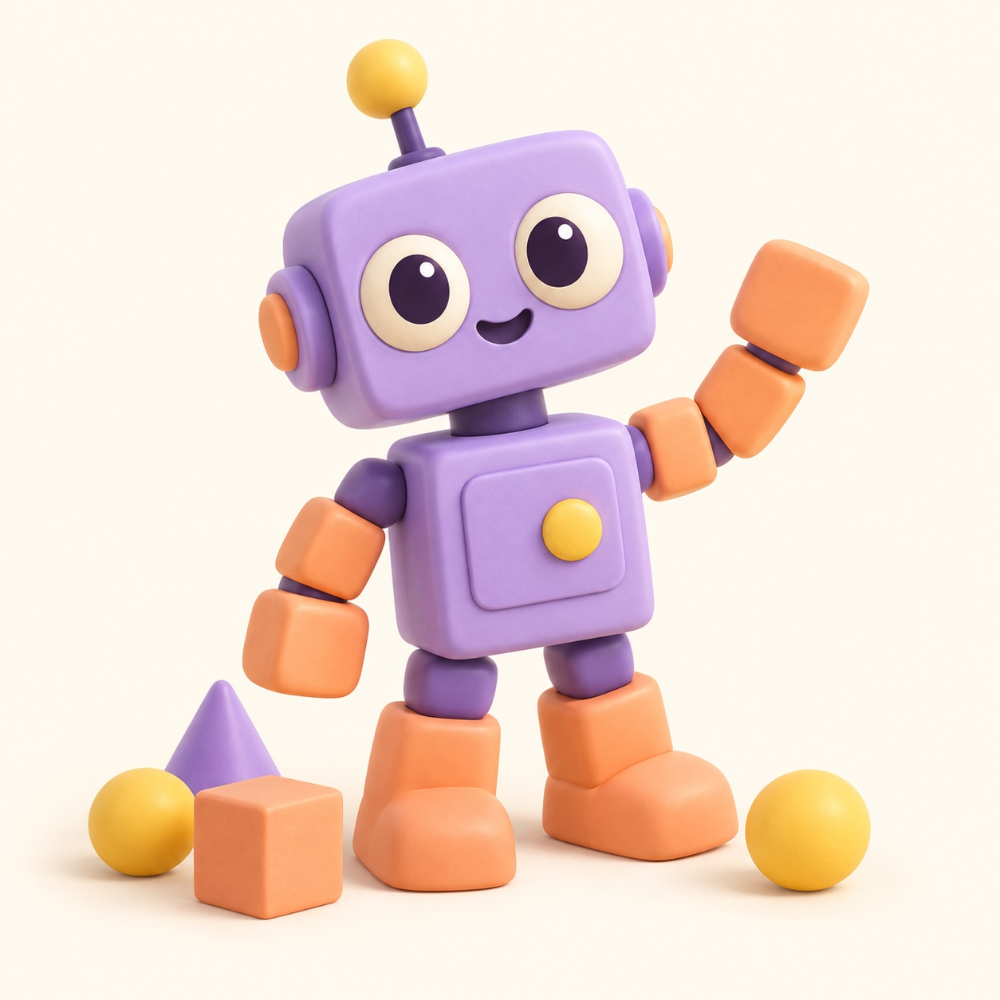
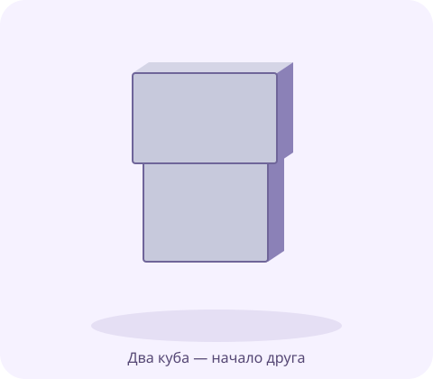
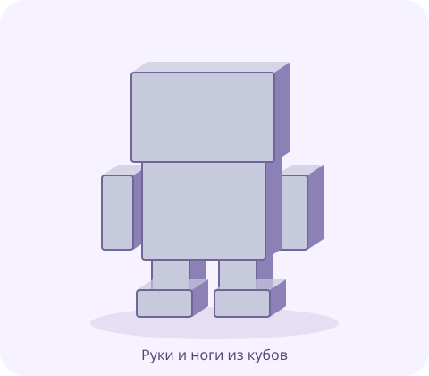
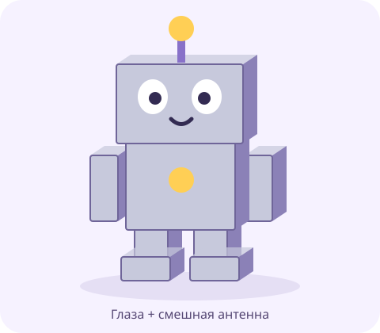
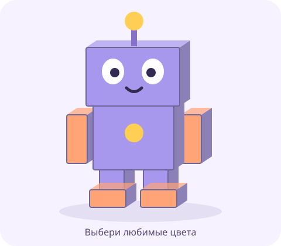

Робот,
давай дружить!
Всего несколько кубиков — и у тебя новый друг. Собери его, придумай имя и научи обниматься.

Меня зовут Бип!Познакомься с кубиком
Сегодня два кубика станут телом и головой робота. Каким будет твой друг: высоким, широким или совсем крошечным?

Большой + маленький
Это схема из простых форм. Размеры выбираешь ты. Серый робот — тоже отличный робот!
-
Осмотрись вокруг
Открой Blender вместе со взрослым. Закрой стартовую заставку щелчком рядом с ней. Видишь куб? Нажми на него — появится оранжевая обводка. Покрути колёсико мыши, чтобы приблизиться и отдалиться.
Хочу посмотреть с другой стороны
Зажми среднюю кнопку мыши (колёсико) и немного подвигай мышь. Ты ходишь вокруг куба, а сам куб стоит на месте. Нет такой мыши? Потяни мышью за цветные оси в правом верхнем углу рабочей области.
-
Кубик становится телом
Наведи мышь на большую рабочую область. Нажми S и подвигай мышь: куб растёт и уменьшается. Щёлкни левой кнопкой, чтобы выбрать размер. Попробуй сделать забавное широкое тело.
Если получилось не так
Пока движение не закончено, нажми Esc, чтобы отменить его. После щелчка: меню Edit → Undo (Правка → Отменить). Чтобы растянуть куб только по ширине, попробуй S, затем X, подвигай мышь и щёлкни. Это необязательно.
-
Добавь голову
Вверху рабочей области нажми Add → Mesh → Cube (Добавить → Сетка → Куб). Новый куб выбран. Нажми G, затем Z, подвигай мышь вверх и щёлкни. Уменьши голову с помощью S.
Куда делся новый куб?
Он появился в середине сцены и может прятаться внутри первого. Не щёлкай по другому объекту: сразу нажми G, затем Z и подними новый куб. Z — движение вверх и вниз. Чтобы видеть спереди, выбери View → Viewpoint → Front. Цифровая клавиатура не нужна.
☀ Минутка без экрана. Встань и покажи, как ходит большой робот. А теперь — совсем маленький!
Сохранить робота и продолжить в другой день
Вместе со взрослым выбери File → Save As (Файл → Сохранить как). Выбери свою папку, назови файл robot.blend и нажми Save As. В следующий раз: File → Open и этот файл. Если он уже сохранён, достаточно File → Save.
Что у меня получилось
Руки, ноги… обнимашки!
Подарим другу руки и ноги. Одна деталь уже получилась? Сделаем ей пару!

Пара для каждой детали
Кубики можно вытягивать. Ноги могут быть короткими, а руки — очень длинными.
-
Сделай одну руку
Открой свой файл. Добавь куб: Add → Mesh → Cube. Уменьши его с помощью S. Нажми G, затем X, чтобы поставить руку сбоку. Щёлкни для подтверждения.
Как сделать длинную руку?
Нажми S, затем Z и подвигай мышь. Щёлкни, когда длина понравится. С помощью G, затем Z подними руку к телу. Каждое действие подтверждай отдельным щелчком.
-
Подари руке близнеца
Выбери руку щелчком. Нажми Shift + D, затем X. Передвинь копию на другую сторону и щёлкни. Получилась пара!
Копия убежала или наложилась на руку
После Shift+D начинается движение копии. Esc отменяет только движение: копия остаётся на месте. Если уже нажал Esc, нажми G, затем X и передвинь выбранную копию. Ошибся? Edit → Undo отменит последнее действие.
-
Придумай ноги
Добавь маленький куб и передвинь вниз с помощью G, затем Z. Передвинь в сторону: G, затем X. Сделай копию для второй ноги. Или оставь одну широкую ногу — робот-прыгун готов!
Хочу свериться со схемой
На схеме есть и ноги, и отдельные ботинки. Ботинки — дополнительная идея, делать их не обязательно. Важнее, чтобы ты узнал своего героя.
☀ Минутка без экрана. Робот просит зарядку: потянись, помаши руками и потопай ногами.
Сохранить робота и продолжить в другой день
Вместе со взрослым выбери File → Save As (Файл → Сохранить как). Выбери свою папку, назови файл robot.blend и нажми Save As. В следующий раз: File → Open и этот файл. Если он уже сохранён, достаточно File → Save.
Что у меня получилось
Привет! Как тебя зовут?
Робот умеет обнимать облака? Или ищет потерянные носки? Придумай, что делает именно твой друг.

Теперь у друга есть характер
Глаза, пуговица, антенна — выбери что-нибудь одно. Все украшения повторять не нужно.
-
Выбери суперумение
Расскажи вслух: «Моего робота зовут… Он умеет…» Реши, какая деталь ему пригодится: большая антенна, смешные уши или кнопка для объятий.
-
Добавь свою деталь
Для круглой детали выбери Add → Mesh → UV Sphere (Добавить → Сетка → Сфера). Уменьши её клавишей S. Передвинь с помощью G, затем нужной оси: X, Y или Z.
Как поставить глаза перед лицом?
Переключись на вид спереди: View → Viewpoint → Front. X двигает влево-вправо, Z — вверх-вниз. Y двигает вперёд-назад. Поставь сферу перед головой, проверь сбоку: View → Viewpoint → Right. Взрослый может помочь с глубиной. Второй глаз можно скопировать через Shift+D, затем X.
-
Покажи настроение
Хочешь, чтобы робот махал? Выбери руку, нажми R, затем Y, немного подвигай мышь и щёлкни. Или оставь как есть и покажи другу любимую деталь.
Ещё одна идея, если хочется
Добавь куб для стержня антенны и сферу сверху. Или сделай кубические уши. Улыбка, зрачки и пуговица на схеме — необязательные украшения. Достаточно одной своей детали.
☀ Минутка без экрана. Отдохни от экрана и придумай роботу смешной голос. Бип-буп!
Сохранить робота и продолжить в другой день
Вместе со взрослым выбери File → Save As (Файл → Сохранить как). Выбери свою папку, назови файл robot.blend и нажми Save As. В следующий раз: File → Open и этот файл. Если он уже сохранён, достаточно File → Save.
Что у меня получилось
Цветной друг и первое фото
Сегодня выбираем любимые цвета. А взрослый поможет сфотографировать робота внутри Blender.

Твой робот — твои цвета
Можно оставить один цвет или устроить радугу. Это схема, а не обязательный образец.
-
Выбери любимый цвет
Щёлкни по телу робота. Вместе со взрослым открой Material Properties — вкладку с иконкой красного шарика справа. Нажми New, если материала ещё нет. Найди Base Color и выбери цвет.
Я поменял цвет, но робот серый
В правом верхнем углу рабочей области включи Material Preview — третий из четырёх значков-шариков. Подожди, пока появится цвет. Остальные настройки материала пока не нужны.
-
Одень другую деталь
Выбери голову или руку. Назначь ей цвет тем же способом. Если хочешь, используй тот же материал из списка рядом с кнопкой New.
Почему поменялись сразу две детали?
У копий бывает общий материал. Это удобно для одинаковых рук. Чтобы поменять только одну, взрослый нажимает число пользователей рядом с именем материала — появится отдельная копия. Затем можно выбрать другой Base Color.
-
Сохрани и устрой премьеру
Выбери File → Save (Файл → Сохранить). Покажи робота и расскажи, что он умеет. Для фотографии открой подсказку ниже вместе со взрослым.
Для взрослого: камера, свет и PNG
Сначала сохраните .blend. Выберите удобный вид, чтобы робот целиком помещался в рабочей области. Если камеры нет: Add → Camera. Сделайте её активной через View → Cameras → Set Active Object as Camera. Затем View → Align View → Align Active Camera to View. Проверьте рамку: View → Cameras → Active Camera. Добавьте или переместите свет; для простого старта можно Add → Light → Sun и повернуть его. Выполните Render → Render Image. Если темно или робот обрезан, закройте окно результата, поправьте свет или камеру и повторите. В окне результата: Image → Save As, выберите PNG, имя robot.png и сохраните. Сохранение .blend не сохраняет PNG. Если настройка утомляет, оставьте фото на другую встречу — миссия уже удалась.
☀ Минутка без экрана. Устрой выставку: поставь рядом настоящую игрушку и познакомь её со своим роботом.
Сохранить робота и продолжить в другой день
Вместе со взрослым выбери File → Save As (Файл → Сохранить как). Выбери свою папку, назови файл robot.blend и нажми Save As. В следующий раз: File → Open и этот файл. Если он уже сохранён, достаточно File → Save.
Что у меня получилось
Ура! У тебя появился 3D-друг.
Что тебе больше всего понравилось придумывать? Если хочется ещё — сделай роботу смешную шляпу из куба. А можно просто полюбоваться своей работой.
Для взрослых: подготовка и помощь
Это четыре отдельные встречи, а не один длинный урок. В 6–7 лет читайте шаги вслух и помогайте с клавиатурой; в 8–10 лет предложите ребёнку попробовать самому. Ориентир — 15–25 минут вместе с короткой разминкой. Устали раньше? Сохраните файл и продолжите в другой день.
Перед началом
- Запустите Blender 5.2 LTS на компьютере, выберите стандартный Layout и Object Mode. В уроке используются английские названия меню с русскими пояснениями.
- Проверьте мышь с колёсиком. На iPad читаем курс, а Blender используем на компьютере.
- Сохраните первый файл вместе. Достаточно одной папки и файла robot.blend.
- По желанию потренируйтесь сами ставить камеру и свет. В четвёртой миссии эта часть предназначена для взрослого.
Что считать успехом
Ребёнок выбрал, изменил или добавил форму и принял хотя бы одно своё решение. Помощь взрослого не отменяет успех. Фото не обязательно; настройка камеры и света может подождать. Учительские задачи не включены в детский прогресс.
Об иллюстрациях
Сиреневый герой — иллюстрация для вдохновения. Картинки внутри миссий — авторские схемы форм, а не скриншоты Blender и не обещание точного результата. Скругления, блики и все украшения повторять не нужно. Настоящий интерфейс смотрим в открытом Blender.
Если ребёнок хочет больше
Предложите другую пропорцию тела, кубическую шляпу или ещё один глаз. Точный ввод координат, Edit Mode, модификаторы и сложные материалы для этой недели не нужны.
Справка Blender
Перемещение, вращение и размер · Копирование · Материалы · Камера